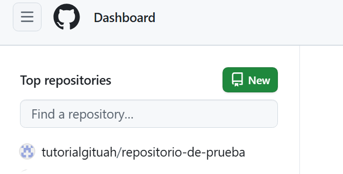
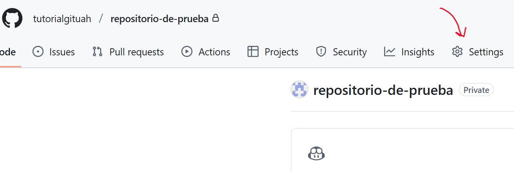
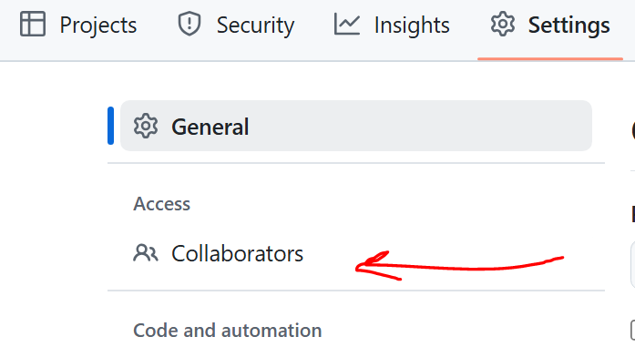
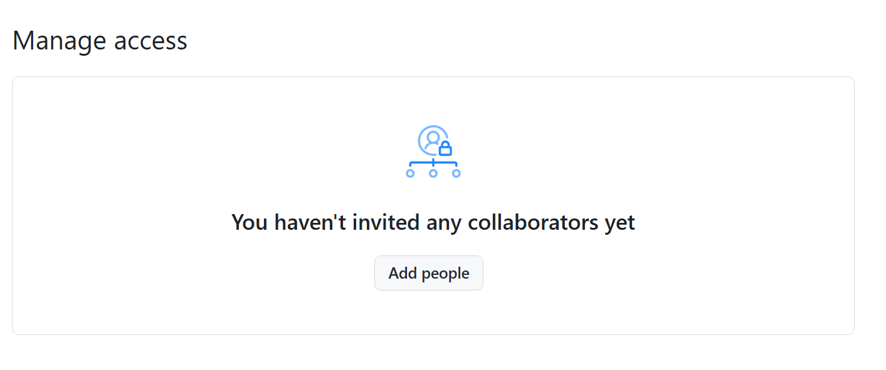

Crear un Repositorio


- Seleccionamos el repositorio sobre el que queramos hacer la invitación
- Hacemos click en "Settings"


- Seleccionamos "collaborators"
- Hacemos click en "Add People" para poder buscar a nuestro colaborador
- Ponemos el nombre de la persona que va a colaborar con nosotros y le damos a "add to repository", asegurarse de poner bien el nombre de usuario (o email, el nombre completo puede estar repetido varias veces por gente que se llame igual)